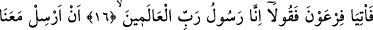
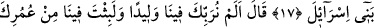
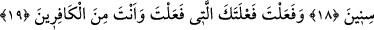
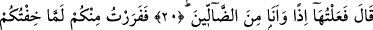
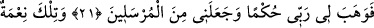
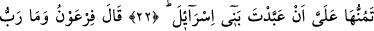
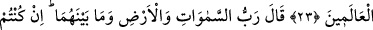
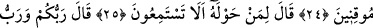
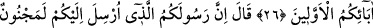
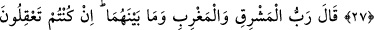
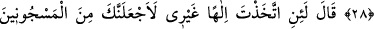
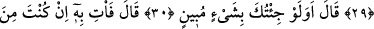
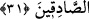
HAYDİ FİRAVUN’A
GİDİP DEYİN Kİ
16. Haydi Fir’avn’a gidip deyin ki: “Gerçekten biz, âlemlerin Rabbi’nin elçisiyiz;
17. İsrailoğullarını bizimle beraber gönder.
18. (Fir’avn) dedi ki: Biz seni çocukken himayemize alıp büyütmedik mi?
Hayatının birçok yıllarını aramızda geçirmedin mi?
19. Sonunda o yaptığın (kötü) işi de yaptın. Sen nankörün birisin!
20. (Musa) dedi ki: Ben o işi o anda sonunun ne olacağını bilmeyerek yaptım.
21. Sizden korkunca da hemen aranızdan kaçtım. Sonra Rabbim bana hikmet
bahşetti ve beni peygamberlerden kıldı.
22. O nimet diye başıma kaktığın ise İsrailoğulları’nı kendine kul köle etmendir.
23. Fir’avn şöyle dedi: “Âlemlerin Rabbi dediğin de nedir?”
24. Mûsâ cevap verdi: “Eğer işin gerçeğini düşünüp anlayan kişiler olsanız,
(itiraf edersiniz ki) O, göklerin, yerin ve ikisi arasında bulunan her şeyin Rabbidir.”
25. (Fir’avn) etrafında bulunanlara: “İşitiyor musunuz?” dedi.
26. Musa dedi ki: “O, sizin de Rabbiniz, daha önceki atalarınızın da Rabbidir.”
27. Fir’avn: “Size gönderilen bu elçiniz mutlaka delidir.” dedi.